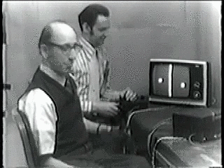

Welcome to Pong Classic
Pong is the first computer game ever created! There are two paddels and one ball, the objective is to make sure your paddle hits the ball and the opponents paddle misses the ball, this will reward a point.
Mechanics
The controls are very simple for this game, the  arrow key moves your paddle up and the
arrow key moves your paddle up and the  arrow key moves your paddle down. The difficulty decides the
ball speed, hard makes the ball move faster as well as the computer.
arrow key moves your paddle down. The difficulty decides the
ball speed, hard makes the ball move faster as well as the computer.
Please enter a username
About Pong
Pong is a table tennis-themed arcade video game featuring simple two-dimensional graphics, manufactured by Atari and originally released in 1972. It was one of the earliest arcade video games and created by Allan Alcorn as a training exercise assigned to him by Atari co-founder Nolan Bushnell.
Pong was the first commercially successful video game, and it helped to establish the video game industry along with the Magnavox Odyssey. Soon after its release, several companies began producing games that closely mimicked its gameplay. Eventually, Atari's competitors released new types of video games that deviated from Pong's original format to varying degrees, and this, in turn, led Atari to encourage its staff to move beyond Pong and produce more innovative games themselves.
Pong can be both addictive and frustrating, here you can see the first ever ragequit in 1969 by someone losing in an early version of pong.
